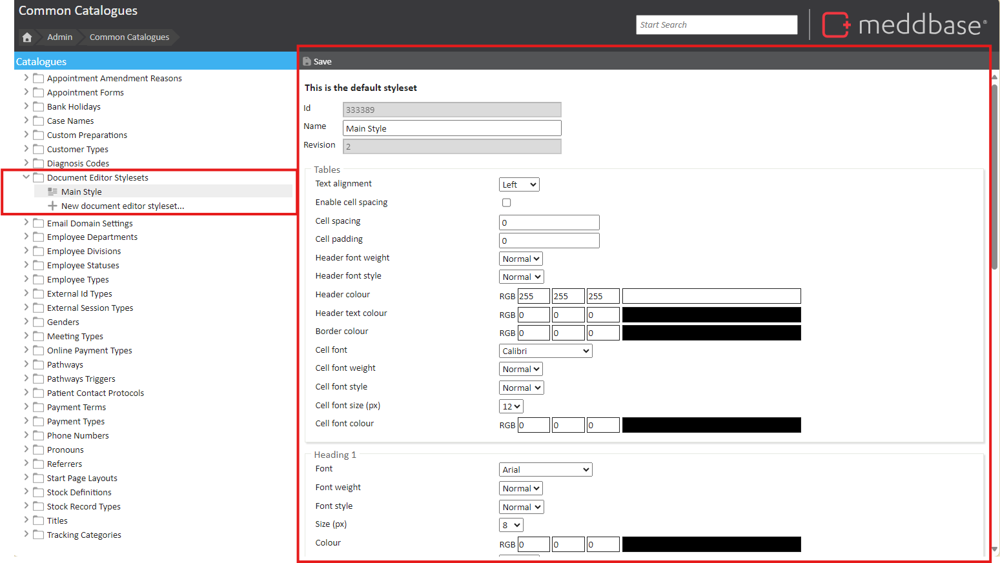
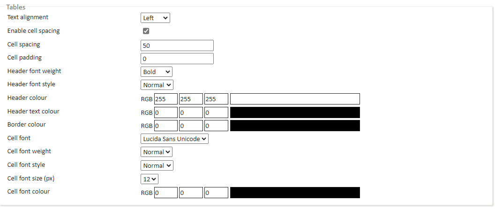
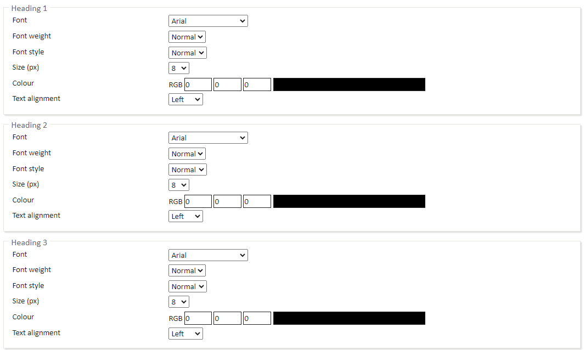
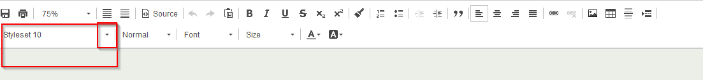

The Meddbase Document Editor allows users to create and edit documents more intuitively, helping you with maintaining the consistency of your documents. The Editor allows the use of Stylesets - a highly-customisable tool which allows users to pre-define the look of tables, headings and formatted text.
The purpose of this article is to explain how to create a Style set and where to use them. This article is split into the following sections:
To create a new Styleset or edit an existing one, go to Admin > Common Catalogues.
Open the Document Editor Stylesets catalogue and choose one of existing Stylesets or add a new one.

On your right-hand side, you will now see the following options which can be defined and a style set:
For tables within your document, you can set the style for:

There are multiple paragraph formats which can have the following styles set for. These predefined formats are:
For each of these formats, you can set a style for:

When in the document editor, you can select the desired Styleset for the document. On the top-middle and right of your screen, you will find new tools for managing Stylesets. Choose one of your pre-defined Stylesets from the drop-down list and a Paragraph Format. Whenever you change your Styleset, the updated settings to paragraphs will apply automatically.
Each document can only utilise one Styleset at any one time.
